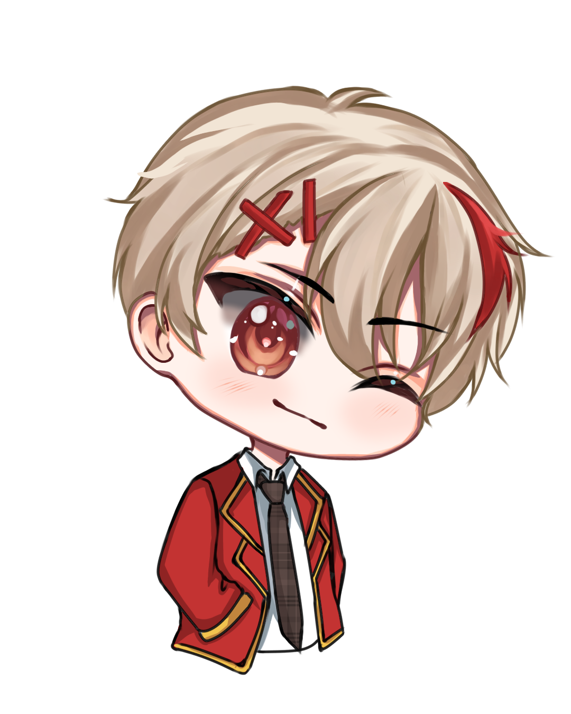
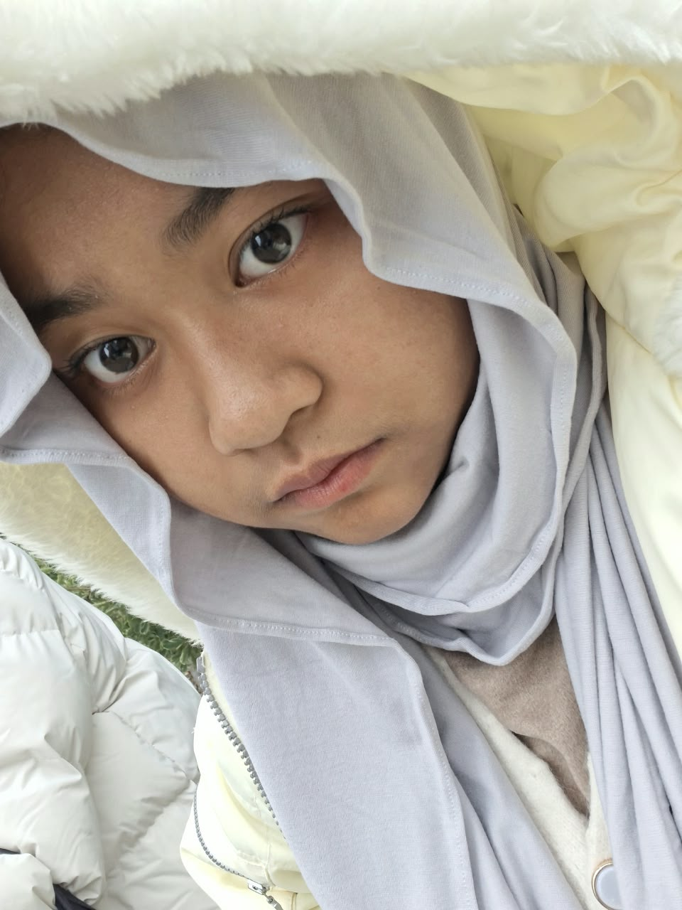
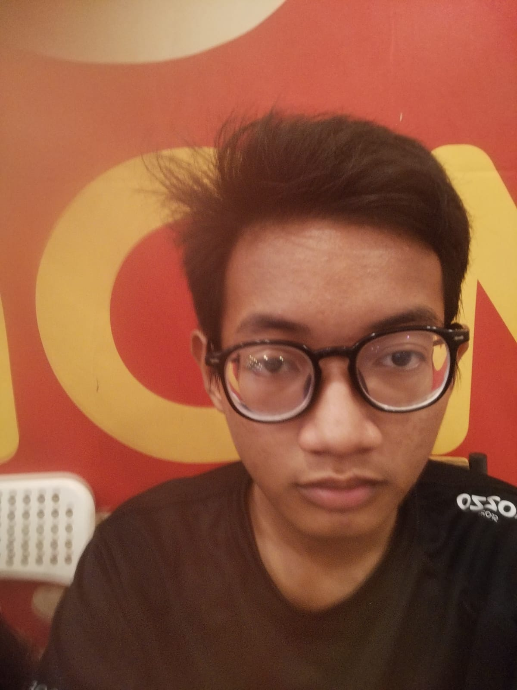

📌 Kenali Calon Pemimpinmu
Visi, Misi & Program Kerja
Cermati yang diajukan untuk calon pemimpin kajuku!
Anasta Humaira Atika
"Slogan 1"
"Menjadikan Kajuku sebagai ruang berkreasi yang seru,
edukatif, dan inklusif untuk mengembangkan
wawasan budaya, keterampilan bahasa, serta bakat
seni anggota di lingkungan sekolah."
- Pembelajaran Interaktif dengan metode permainan, simulasi, dan praktik langsung.
- Memfasilitasi segala minat anggota di berbagai bidang secara terarah.
- Mengadakan kegiatan keakraban rutin yang mempererat hubungan antar-anggota maupun lintas ekskul.
- Menunjukkan kepada pihak sekolah dan siswa lain bahwa Kajuku mampu menjadi wadah yang produktif dan berprestasi.
- Beyond Bond: Mengadakan bonding time untukmempererat koneksi antar-anggota Kajuku.
- KajuTales: Membuat mini exhibit, dan story interaktif di sosial media Kajuku.
- Creajuku: Mengadakan proyek kreativitas media sosial untuk anggota.
- Insight: Mengadakan workshop bersama alumni/pembina Kajuku.

Nasywa Ivana Maharani
"Slogan 2"
"Menjadikan Japanese Club sebagai wadah yang mampu mewadahi berbagai minat dan tujuan anggota, sekaligus menjadi tempat untuk belajar, sharing informasi, berproses, dan berkembang bersama."
- Menciptakan kegiatan Japanese Club yang menarik, aktif, dan bisa diikuti oleh anggota dengan minat dan tujuan yang berbeda-beda.
- Mengembangkan kemampuan anggota dalam bahasa Jepang sekaligus memperluas wawasan tentang budaya, pendidikan, dan kehidupan di Jepang.
- Mendukung anggota yang memiliki rencana untuk melanjutkan pendidikan di Jepang dengan berbagi informasi dan pengalaman yang relevan.
- Membangun lingkungan Japanese Club yang nyaman, saling mendukung, dan mendorong setiap anggota untuk berani berkembang serta mencoba hal-hal baru.
- Menjalin Kerjasama dengan club/komunitas Jepang lainnya, sehingga dapat menambah wawasan dan pengetahuan.
- KAI: Program yang mengumpulkan berbagai kesempatan untuk anggota, seperti info beasiswa, lomba, pertukaran pelajar, universitas di Jepang, volunteer, dan kegiatan yang berhubungan dengan Jepang, lalu dibagikan secara rutin.
- Japan Fact: Setiap pertemuan, anggota membagikan 1 fakta menarik tentang Jepang secara singkat. Topiknya bisa seputar budaya, bahasa, makanan, sejarah, teknologi, hingga kehidupan sehari-hari.

Alfarrezal Raditya Syam
"Slogan 3"
"Meningkatkan minat orang-orang untuk ikut
bergabung ekskul serta membuat anggota ekskul
merasa nyaman dalam kegiatan. Dan juga membuat
ekskul menjadi lebih dikenal."
- Menghadirkan pembelajaran yang interaktif dan tidak membosankan.
- Mengadakan dan mengikuti kegiatan yang tidak terpaku dalam lingkup sekolah saja.
- Membuat tanda pengenal sebagai identitas anggota.
- A 4 R
- HOGAHON
- MIBUNSHO